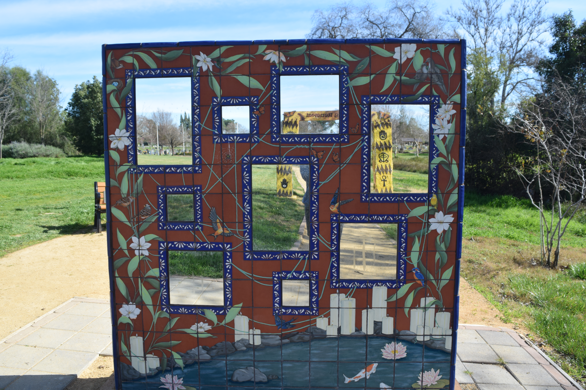
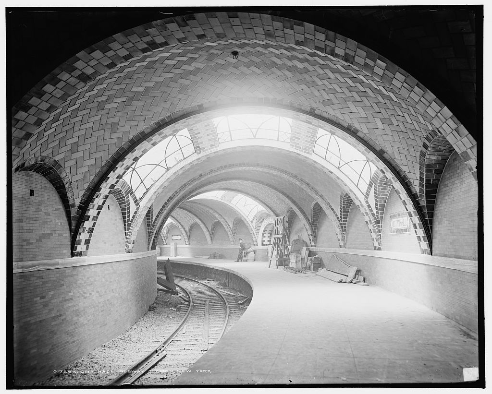

Research Form Design
January 15th, 2025
After reading through the article I found that it was helpful as a quick cheat sheet for the best practice when it comes to creating forms or text boxs on websites. The first part of the article talks about the value of having less input fields. People on the web do not want to spend a long amount of time filling in information, which is why “less is more” when it comes to gathering information. In the new age of short attention spans, this is more true than it has ever been.
Another important aspect of form design comes from the labeling for the text box. The label should always be outside of the box and not inside the text box. Mainly so that the user still knows what the text entry is supposed to be. If the label is inside of the text field, it disappears once they start typing. Other common practices are to minimize the use of the dropdown menu and providing a matching keyboard for the action at hand.
Overall these are just some of the common practices for coding forms on websites and apps.
Best Practices for Form Design by Salim AnsariLightship - Innovative Web Design
January 17th, 2025
The Lightship website is innovative and puts on a show for the viewer, with a large title card video that is dynamic once you start to scroll down. This website is also minimalist, which gives the page room to breath and it makes it very easy to navigate.
LightshipOverlays Design Pattern Research
January 28th, 2025
Designing for a website is similar to many other media of design. Web Designers have to follow specific rules in order to create an experience that their audience can understand and use. Some of these rules help the audience through the website and improve the user experience through common practices. This article discusses the best practices for modals, overlays, and dialog windows.
A modal window can be helpful when your website needs to display more information for a certain topic. For example, some websites like The New York Times use the modal window in order to promote their paid subscription service. Some of the common practices are to have an escape hatch for the user to exit and a descriptive title. Another key part is to make sure that the sizing is correct. One of the basic rules is to make sure that the window does not take up more than 50% of the screen. Also, the window needs to be towards the top of the page, so that it does not disappear on a mobile view.
Understanding these rules is important in order to create a streamlined website.
Best Practices for Modals / Overlays / Dialog Windows by Naema BaskanderiVisual Thinking Strategies Research
Febuary 5th, 2025
After going through a couple of different websites, I got to play around on a couple of interactive websites. The first website that I opened was the Primeland Residences website, which features an interactive map as it's entire UI. In order to explore the property, you need to explore the map. Which on paper, sounds fun, but I found it hard to figure out what everything was since all of the buildings looked the same zoomed out. I think it would be helpful to have small tags that are on the map so that you know what you are clicking on.
Primeland Residences by OutpostThe other website I looked at was the home page for Design by Dylan. The first thing I noticed was the amount of interactive elements; the computer screen turns and morphs with scrolling. However, all these elements definitely hurt the overall performance of the website. On my laptop, it took a while to load, and some of the scrolling effects lagged behind the rest of the site. For example, the laptop screen has a video of some of his projects, and it was clipping outside of the actual monitor when I attempted to scroll down.
Understanding these rules is important in order to create a streamlined website.
Design by DylanSTUDIO 2 - Visual Thinking Analysis: Part 1
Febuary 10th, 2025

This image is one of many that represent the gates towards death itself. All of these pictures were taken in a cemetery. This specific photo is at the end of a row of gates that you need to walk under. This is the last gate, and it is interesting how this is not the end; there are holes in the piece that show lush nature and actually another gate. Other photos of the gate could be used to really elevate and make the photos come to life on the page. For example, I think it would be cool to do a scroll effect on the image and have the viewer pushed through each gate until they get to the image above. Overall, I think Giulia has a really interesting topic.
STUDIO 2 - Visual Thinking Analysis: Part 2
Febuary 10th, 2025

My project is going to focus on historical photographs, currently I am looking at historical photos of the subway. My current plan is to show the evolution of the subway and how it relates to our Past, Present, and Future. Everything looks similar, but everything is slightly different with new elements. These images are a visual representation of how life and "History doesn't repeat itself, but it often rhymes." My project is mainly going to center around that idea and real experiences that make us feel alone, which are actually pretty universal experiences. Overall, I can't wait to work on the interactive elements for this project.